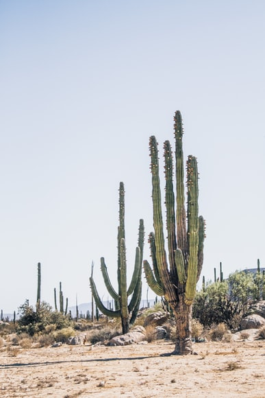

선인장은 대개 잎이 없는 다육질의 큰 줄기가 특징인 현화식물이다. 한국에서 흔히 자라는 선인장(Opuntia ficus-indica var. saboten)은 열대산으로 높이 2m에 달하고 편평한 가지가 많이 갈라지며 제주도에서 자란다. 경절(莖節)은 짙은 녹색이고, 모양은 타원형 또는 달걀을 거꾸로 세운 모양이며 편평하다. 길이 1∼3cm의 가시가 2∼5개씩 돋고 바로 옆에 털이 있으나 오래된 것은 나무처럼 굵어지며 편평한 가지가 사방으로 퍼진다. 여름에 경절 윗가장자리에서 황색 꽃이 핀다. 꽃받침조각·꽃잎 및 수술이 많고 암술은 1개이다. 씨방은 하위이고 열매는 장과로서 서양배같이 생기고 많은 종자가 들어 있으며 먹을 수 있으나 약용하거나 열대지방에서는 대부분 새들이 먹는다. 선인장과에 속하는 식물은 전 세계에 2,000종 내외가 있으며 나무선인장류·선인장류·흰털선인장류의 3군으로 크게 나눈다. 줄기는 해열·행기(行氣)·건위(健胃)·진해(鎭咳)·활혈(活血)·소종(消腫)의 효능이 있어 한방에서는 약재로 이용한다. 약성은 한(寒)하고 고(苦)한 것으로 알려져 있으며, 주로 위심기통(胃心氣痛), 위나 십이지장의 궤양, 해수·폐기종·인후염·유선염·유행성시선염·옹종(癰腫) 등의 치료제로 쓰인다. [네이버 지식백과] 선인장 [仙人掌] (한국민족문화대백과, 한국학중앙연구원)
